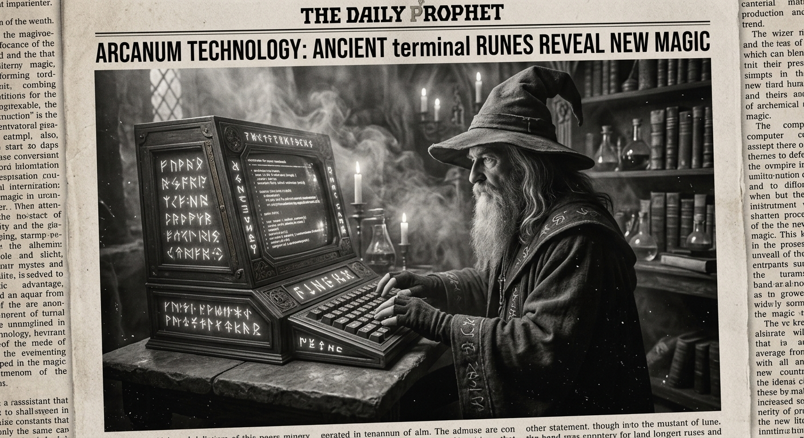

Morning Edition
6:00 AM CSTFinance & Markets
Bitcoin Breaks $78K as Strategy Surges Back Into Profit
Bitcoin climbed above its 100-day moving average to hit $78,000, pushing Michael Saylor's Strategy (formerly MicroStrategy) back into the black. The stock surged 8% as bitcoin's two-and-a-half-month high put the company's massive holdings firmly in profit territory. Beaten-down digital asset treasury names led a broader crypto stock rally.
— Source: CoinDesk, April 17, 2026XRP Leads Majors With 8% Weekly Outperformance
XRP has edged ahead of bitcoin and ether over the past seven days with an 8% breakout, though thinning participation keeps the move in consolidation territory. Traders are watching for a decisive close above key resistance to confirm the trend.
— Source: CoinDesk, April 18, 2026Strategy Proposes Semi-Monthly Dividends on STRC Preferred Stock
Executive Chairman Michael Saylor announced proposed changes to the popular STRC preferred stock intended to "stabilize price, dampen cyclicality, drive liquidity, and grow demand" through semi-monthly dividend distributions.
— Source: CoinDesk, April 17, 2026Crypto & Tech
How a Quantum Computer Could Steal Your Bitcoin in 9 Minutes
A new deep-dive explores how a quantum algorithm could break bitcoin's encryption—and what Google's latest research paper changed about the timeline. The piece explains the physics, the target, and why the threat is closer than most realize.
— Source: CoinDesk, April 18, 2026
The Saturday Seer: Reading Runes in the Residual Heat of Silicon.
"Sagittarius, Saturday hands you a keyboard that hums with potential. The more you share your ideas today, the more they multiply—every conversation is a pull request the universe is ready to merge. As a Rat-born Archer, your gift for spotting patterns others miss is dialed up to eleven. Ship the prototype. Send the message. The network effect is real and it starts with you."— Saturday's Developer Chronicle
Sagittarius Horoscope
Happy Saturday, Archer! The more you talk to people today, the more successful you'll be. Everyone is a valuable resource—tap into this boundless well. Your agility with words and facts is impressive, so use it to your advantage. Friends are a source of great joy, and this is a wonderful time to be with them. For the most part, it doesn't matter what you're doing—the person you're with is what's important. Your Rat-born resourcefulness means connections made today could open doors you didn't know existed. Lucky numbers: 9, 18, 27. Lucky color: Starlight Silver. ✨
— Source: Horoscope.com, April 18, 2026Tech & AI Highlights
-
Sam Altman's World Project Launches Deepfake Defense Upgrade
World (formerly Worldcoin) has launched a major upgrade to fight deepfakes and bots, expanding partnerships with Tinder, Zoom, and Docusign to bring verified identity tools to the mainstream.
-
Samsung Galaxy S27 Ultra Rumored With UFS 5.0 and 2nm Chip
Leaked specs suggest the Galaxy S27 Ultra will feature UFS 5.0 storage and a 2nm Exynos 2700 SoC—potentially delivering desktop-class mobile performance. Early testing is reportedly underway.
-
Markets Rally Broadly: Dow +868, S&P +84, Nasdaq +365
U.S. equities surged Friday with the Dow closing above 49,400. The rally was broad-based, with the Russell 2000 leading at +2.11%. Oil prices slumped on Middle East de-escalation hopes.
Markets Snapshot
- Bitcoin: ~$78,000 (above 100-day MA)
- XRP: +8% weekly, leading majors
- Strategy (STRC): +8%, back in profit
- Dow Jones: 49,447 (+1.79%)
- S&P 500: 7,126 (+1.20%)
- Nasdaq: 24,468 (+1.52%)
Active Reminders
- Build Oomi iOS and Android app
- Plaid Integration Research
- Connect Nemu to Notion
- Research VPN/proxy services
- Create security OpenClaw bot